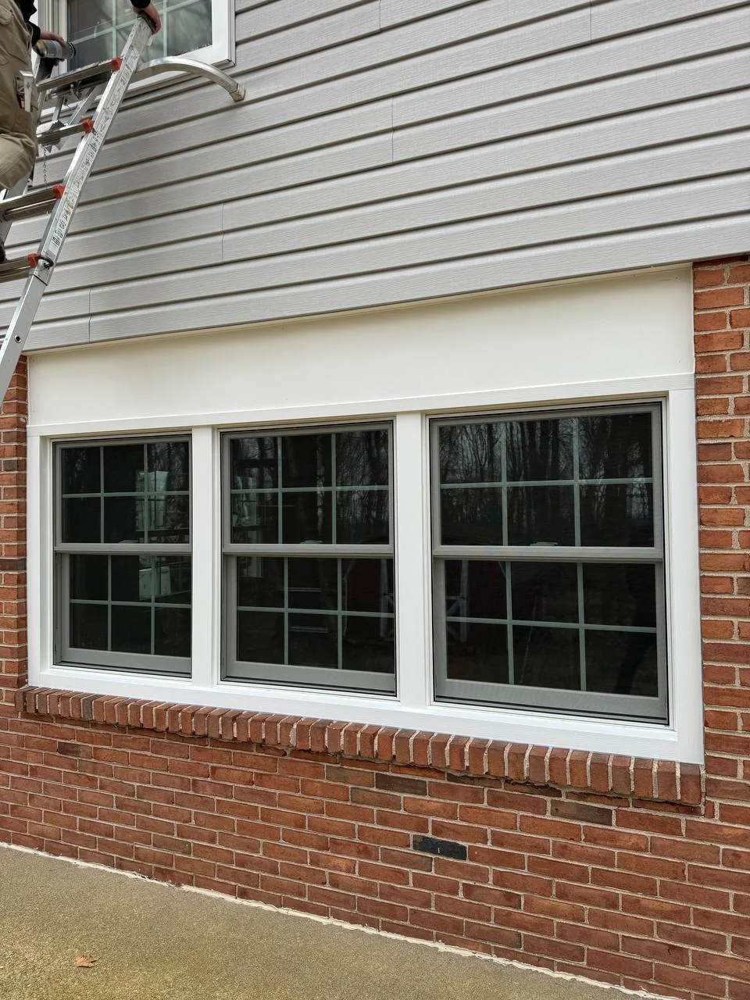
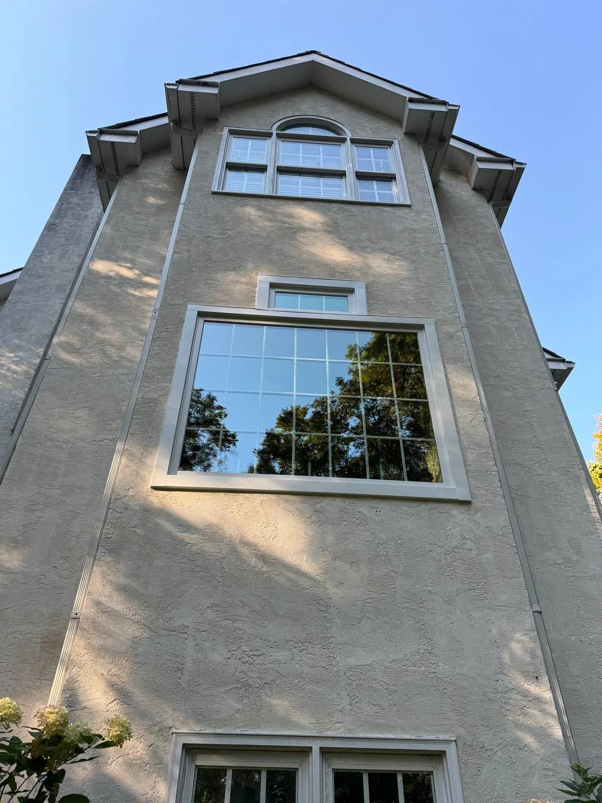
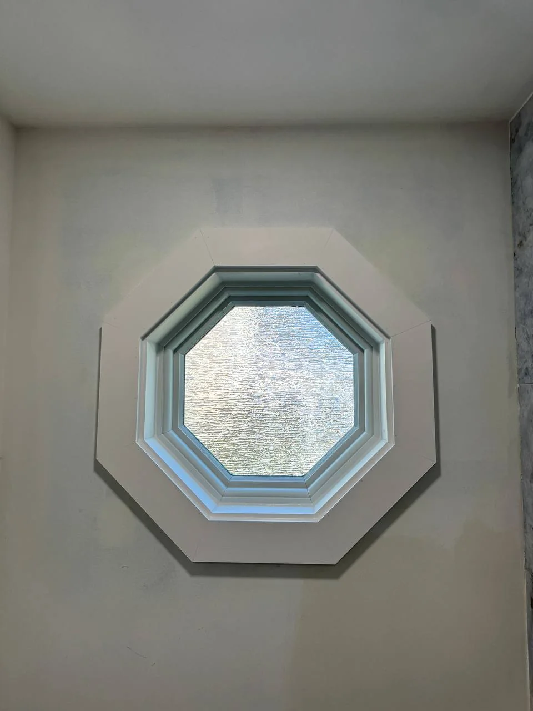

Double-Hung
Two operable sashes for versatile ventilation.
From everyday double-hung replacements to large custom window systems, Comrade Services handles the product, installation and finish work.
Free Window Estimate
Not sure what style you need? That’s okay — we can help determine the best fit during the estimate.
Two operable sashes for versatile ventilation.
Classic style with an operable lower sash.
Side-hinged windows that crank outward.
Top-hinged windows designed for controlled airflow.
Horizontal operation with a clean, simple profile.
Fixed glass for maximum light and views.
Projected window systems that add depth and space.
Curved multi-window assemblies with wide views.
Projected windows often used over kitchen counters.
Compact windows suited to lower-level openings.
Architectural shapes and non-standard sizes.




We work with leading manufacturers and select products based on the home, opening, performance needs and budget. Common brands in our market include Andersen, Pella, Marvin, ProVia and OKNA.
A new window is installed within the existing frame when the frame and surrounding conditions are appropriate.
The existing frame is removed, allowing more complete access to insulation, flashing and finish details around the opening.
Free estimates. Most appointments available as soon as the next day.